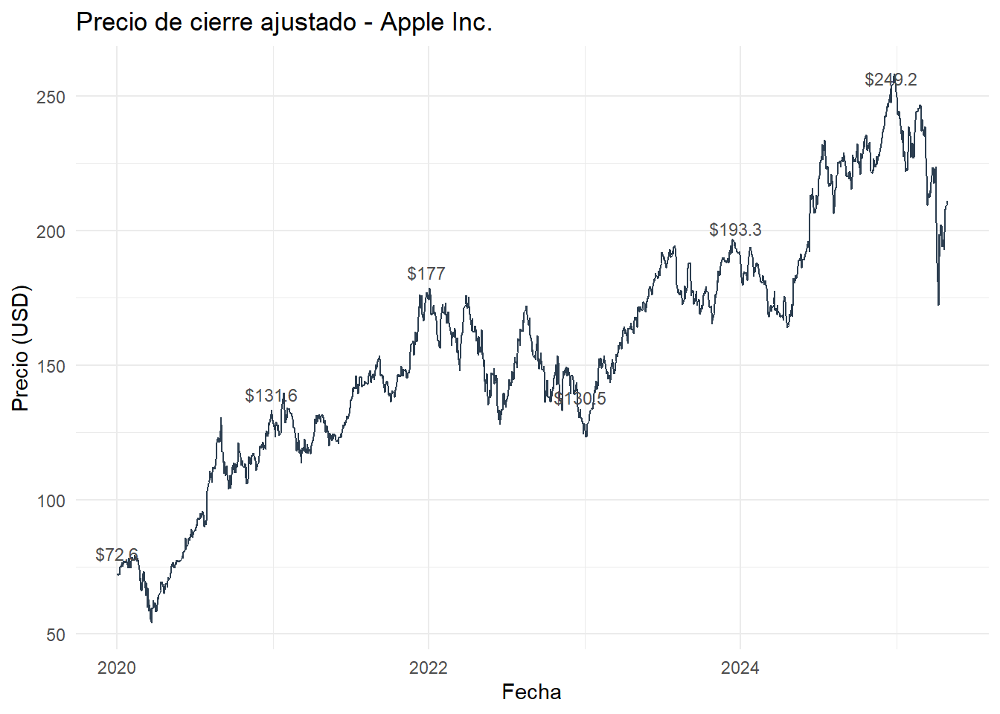
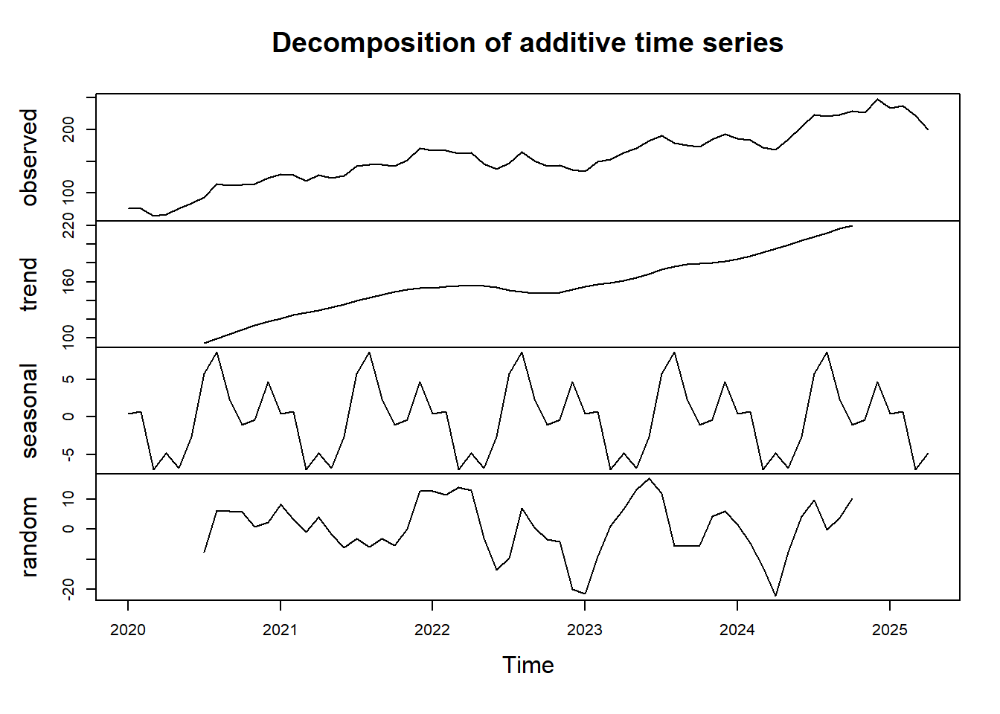
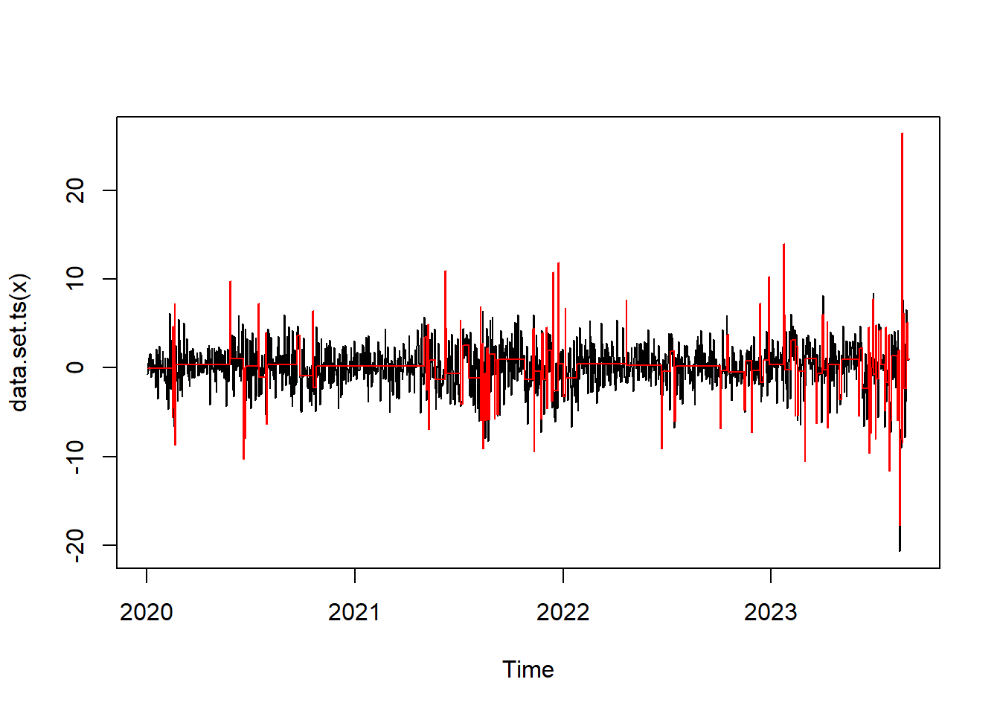

Capitulo3 Preprocesamiento y Modelado Temporal de la Serie AAPL.
3.1 Introducción.
El presente análisis explora la serie temporal del precio de cierre ajustado de las acciones de Apple Inc. (AAPL), obtenida de Yahoo Finance entre 2020 y abril de 2025. Se aplicarán técnicas de preprocesamiento, visualización, descomposición y modelado de series temporales con el fin de identificar patrones relevantes como tendencia, estacionalidad, rezagos y posibles puntos de cambio estructural.
3.2 Objetivo.
Analizar la estructura temporal del precio de las acciones de Apple Inc. mediante técnicas de descomposición, prueba de estacionariedad, diferenciación e identificación de modelo ARIMA. El análisis incluirá visualizaciones con etiquetas para resaltar comportamientos clave.
3.4 Gráfico inicial.
#Librerias
library(ggplot2)
plot1 <- ggplot(apple_data, aes(x = date, y = adjusted)) +
geom_line(color = "#2C3E50") +
geom_text(data = apple_data[seq(1, nrow(apple_data), by = 250), ],
aes(label = paste0("$", round(adjusted, 1))),
color = "gray30", size = 3, vjust = -1) +
labs(title = "Precio de cierre ajustado - Apple Inc.", x = "Fecha", y = "Precio (USD)") +
theme_minimal()
plot1
3.5 Estacionariedad y diferenciación.
# Librerias
library(tseries)
serie_ts <- ts(apple_data$adjusted, frequency = 365, start = c(2020, 1))
adf.test(serie_ts)##
## Augmented Dickey-Fuller Test
##
## data: serie_ts
## Dickey-Fuller = -3.0277, Lag order = 11, p-value = 0.1433
## alternative hypothesis: stationaryInterpretación Según el valor-p de la prueba ADF, si p > 0.05, la serie no es estacionaria. Por tanto, se requiere una diferenciación:
##
## Augmented Dickey-Fuller Test
##
## data: diff_serie
## Dickey-Fuller = -11.094, Lag order = 11, p-value = 0.01
## alternative hypothesis: stationaryResultado esperado: p < 0.05, indicando que la serie diferenciada es estacionaria.
3.6 Descomposición de la serie
ts_monthly <- ts(tapply(apple_data$adjusted, format(apple_data$date, "%Y-%m"), mean), frequency = 12, start = c(2020,1))
descomp <- decompose(ts_monthly)
plot(descomp)
Justificación: La descomposición permite observar la tendencia, estacionalidad y componente aleatorio, facilitando el entendimiento de la serie antes de modelar.
3.7 Modelo ARIMA y validación.
## Series: diff_serie
## ARIMA(0,0,0) with zero mean
##
## sigma^2 = 8.793: log likelihood = -3350.42
## AIC=6702.83 AICc=6702.83 BIC=6708.03
##
## Training set error measures:
## ME RMSE MAE MPE MAPE MASE ACF1
## Training set 0.1034499 2.96531 2.101781 100 100 0.697125 -0.010026133.8 Validación de residuos.
##
## One Sample t-test
##
## data: residuos
## t = 1.2759, df = 1336, p-value = 0.2022
## alternative hypothesis: true mean is not equal to 0
## 95 percent confidence interval:
## -0.05560389 0.26250378
## sample estimates:
## mean of x
## 0.1034499##
## Box-Ljung test
##
## data: residuos
## X-squared = 17.725, df = 12, p-value = 0.1243##
## Shapiro-Wilk normality test
##
## data: residuos
## W = 0.9394, p-value < 2.2e-163.9 Conclusión.
Si p > 0.05 en t-test: la media de residuos es cero.
Si p > 0.05 en Box-test: residuos no están autocorrelacionados.
Si p > 0.05 en Shapiro-Wilk: residuos con distribución normal (deseable pero no obligatorio).
3.11 Punto de cambio.

Interpretación: Se identifica visualmente un punto de quiebre estructural relevante.
3.12 Conclusión.
Se realizó un análisis exhaustivo de la serie temporal del precio de las acciones de Apple Inc. Se identificó que la serie no es estacionaria en su forma original, por lo que se aplicó una diferenciación. Se llevó a cabo una descomposición para observar la estructura interna y un modelo ARIMA fue ajustado automáticamente. Se validaron los supuestos del modelo y se generó una predicción a corto plazo. Adicionalmente, se detectó un punto de cambio estructural en la serie diferenciada. Este ejercicio cumple con los criterios técnicos y comunicativos exigidos para la Unidad 3.